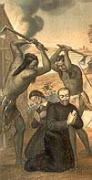

|


| |
|

|
|
| LES ENGAGÉS OU LES "TRENTE-SIX
MOIS"
Les engagés sont des jeunes gens,
surtout de métiers, sans guère d'avenir en France parce que les
métiers y sont encombrés et que le titre de maître
donnant droit à sa propre entreprise y devient de moins en moins
accessible. Ils s'engagent pour trois ans auprès de recruteurs
qui agissent pour des seigneurs ou des communautés religieuses à la
recherche de main-d'œuvre ou de gens à établir dans les fiefs. Le recruteur se charge de tout: avances en vue du voyage, frais de
transport, nourriture. Ils touchent un salaire annuel de 20 à 150
livres, selon leur métier. À la fin de leur service, ils sont libres
de rester au pays ou de retourner en France.
Mathieu Choret est arrivé en
Nouvelle-France en 1643, comme engagé des Jésuites, avec un contrat de
trois ans.
La première fois que les documents font
mention de sa présence au pays, il
se trouve aux Trois-Rivières où il travaille comme engagé pour le compte des Jésuites. Il gagne cent livres par
an. Selon le Journal
des Jésuites, il s’y trouve depuis le mois de novembre
1645, remplaçant le colon Pierre Gonthier. Ce dernier était revenu à
Québec, ramené par Robert Hache, pour y faire la cuisine " à la
place de nos frères qui y avaient trop de peine". Mathieu a
aussi probablement séjourné dans la région d’Hochelaga (puisque
dans son contrat de mariage en 1647 il dit vivre à Montréal)?
|
|

|
|
LES TROIS-RIVIÈRES
De retour au Canada après la prise de
Québec par les frères Kirk, Champlain établit, à trente lieues de
Québec, un nouveau fort qui
servira en même temps de poste de traite des fourrures. En 1634
il charge Laviolette, un employé de la compagnie des Cent-Associés, de conduire une
barque à l'embouchure de la rivière Saint-Maurice, ayant à bord les
hommes et le matériel nécessaires à un établissement. Les
pères jésuites Jean de Brébeuf et Antoine Daniel font partie du
groupe.
Donc, dès la fondation de
Trois-Rivières, les Jésuites y ont une maison dans laquelle on
retrouve Mathieu au travail en 1645. |
|
|
|
LA COMPAGNIE DE JÉSUS
Au début du 17ème siècle l'église
catholique française est en pleine mutation. La peur de l'enfer est
plus forte que jamais, les Chrétiens se font un devoir de combattre l'œuvre
de Satan sur tous les fronts. Les élites s'aperçoivent que le
monde tel qu'ils le connaissaient est en train de finir. Il y a des
courants eschatologiques très forts (réforme, protestantisme...).
Le monde court à sa perte, le jugement dernier va arriver. Si les païens
ne sont pas convertis les chrétiens iront en enfer. Pour eux, toute
la terre doit être convertie car ils sont redevables devant Dieu de
toutes ces âmes.
C'est dans cette logique que les Jésuites, une communauté religieuse fondée en 1540 par Ignace de
Loyola, se répand partout dans le monde. Les Jésuites se
perçoivent comme les soldats de Dieu. Ses membres sont les meilleures recrues, des hommes intelligents, éloquents, capables
d'apprendre les langues indigènes et faire le plus de conversions
possibles Ils arrivent au Canada en 1625. Ils écrivent leurs
annales rapportant tous les faits de leur mission. Ces documents
sont envoyés à leur supérieur en France et sont publiés, ils
rapportent beaucoup de succès dans les salons où leur exotisme fait
sensation. Ce sont "Les Relations des Jésuites",
ces écrits sont une mine d'or pour les historiens. Lorsqu'on les
lit, on constate qu'une seule chose guidait leurs actions: faire
connaître leur foi aux indigènes et les baptiser.
|
|

|
Pour cela ils sont près à
tout endurer, pour eux la mort après la torture est leur désir le plus
intense: cette façon de mourir étant la garantie d'un accès au
Ciel.
Aujourd'hui on les
qualifierait d'intégristes. Autres temps, autres mœurs....
|

|
|
|
|
POURQUOI QUITTER LA FRANCE?
Et Mathieu dans tout cela?
Pourquoi prend-il la décision de
devenir engagé pour les Jésuites durant trente-six mois au Canada? Chose certaine, il est considéré comme un bon catholique car
les Jésuites choisissent de bons sujets comme engagés, ne voulant pas
que ces derniers donnent un mauvais exemple aux indigènes qu'ils veulent
tant convertir.
La France, du temps de
Mathieu, est marquée par de nombreuses guerres avec l'Angleterre,
l'Espagne, les Pays-Bas et d'autres. C'est ce qu'on appelle la guerre
de trente ans, laquelle a débuté en 1618. Plusieurs régions
de France furent dévastées au cours des engagements.
Mathieu, né
au début des années 1620, n'a donc jamais vécu autrement qu'en temps de
guerre dans son pays.

Aussi à cette époque troublée, les
finances sont dans un état précaire car les impôts ne sont pas
souvent payés. Représentants de l'autorité royale et seigneurs
font alors saisir les biens des paysans. Les soulèvements
populaires, aussi bien dans les campagnes que dans les villes, ajoutent à
la confusion générale. Cet état de guerre quasi continuel
engendre des épidémies qui déciment la population. Une
"mini ère glaciaire" débute au 16ème siècle et durera plus
de deux siècles. Il en résulte des mauvaises récoltes, et la famine. La
population d'Europe décroît. La
France est aussi agitée par une série de soulèvements populaires visant
à protester contre l'absolutisme de l'autorité royale. Cela
mènera au mouvement baptisé du nom de "Fronde"
en 1648.
Bref, la vie en France n'est pas
réjouissante et la grande misère pousse beaucoup de jeunes gens
dans les bateaux vers la Nouvelle-France. Sans doute y a-t-il aussi
une part de rêve: on trace un portrait si beau du Nouveau-Monde
en parlant d'un climat de liberté, de chasse et de pêche
extraordinaires, de forêts immenses, mais aussi des mœurs cruelles des
indigènes.
Le simple goût de l'aventure et
l'attrait de la liberté peuvent suffire. Sous l'Ancien
Régime en France, le père de famille détient des droits très stricts
sur ses enfants, notamment en termes de mariage et d'établissement et les
familles n'hésitent pas à punir les enfants désobéissants par
enfermement, et souvent pour des peccadilles. Considérant que la
majorité n'est atteinte qu'à vingt-cinq ans, l'émigration peut sans
doute devenir une alternative intéressante pour certains jeunes hommes.
Laquelle de ces raisons peut expliquer le
choix de Mathieu, ou un peu de chacune? Ou une toute autre raison
que nous ne saurons jamais?
|
|
RETOUR EN FRANCE
Mathieu, à la fin
de son contrat de trois ans, reprend le
bateau pour la France le mercredi 31 octobre 1646 (Journal des
Jésuites). Le contrat d'un
engagé inclue ses frais de transport aller et retour. Ce jour-là deux
vaisseaux quittent Québec, dans le premier se trouve un jésuite,
le père Quentin, accompagné de Robert Hache. M. de Maisonneuve, M.
Giffard, M. Tronquet, tous des hommes importants dans la colonie sont
aussi à bord. Dans le second vaisseau, les fils de M. de Repentigny, de
M. Couillard, de M. Giffard, etc... prennent place. On peut supposer que
Mathieu est embarqué dans le premier navire, car Robert Hache
l'accompagne à La Rochelle à leur arrivée en France.
Les
historiens croient, qu'avant 1663, les deux tiers des engagés
choisissent de retourner en France. Mathieu Choret fait partie du
tiers des engagés qui décident de s'installer définitivement au Canada.
Mais, pour cela, il lui faut retourner en France chercher ce dont il a le plus
besoin pour réussir son établissement définitif dans ce Nouveau-Monde,
soit une épouse.
Il n'y a presque pas de femmes à marier au
Canada (ce n'est que vingt ans plus tard que les Filles du Roy
arriveront), et Mathieu a peut-être une promise qui l'attend. Nous ne le savons pas mais, considérant le temps nécessaire à la
traversée et la date de son mariage, nous pouvons penser que c'est le
cas, ou alors le choix d'une épouse se fait très vite à l'époque (la
plupart du temps les mariages sont arrangés par les parents).
Nous
n'avons pas de preuve officielle, mais il est fort probable que Mathieu
Choret soit le premier résident du Québec à aller se marier en
France, et à ramener son épouse au pays. |
|

|
|